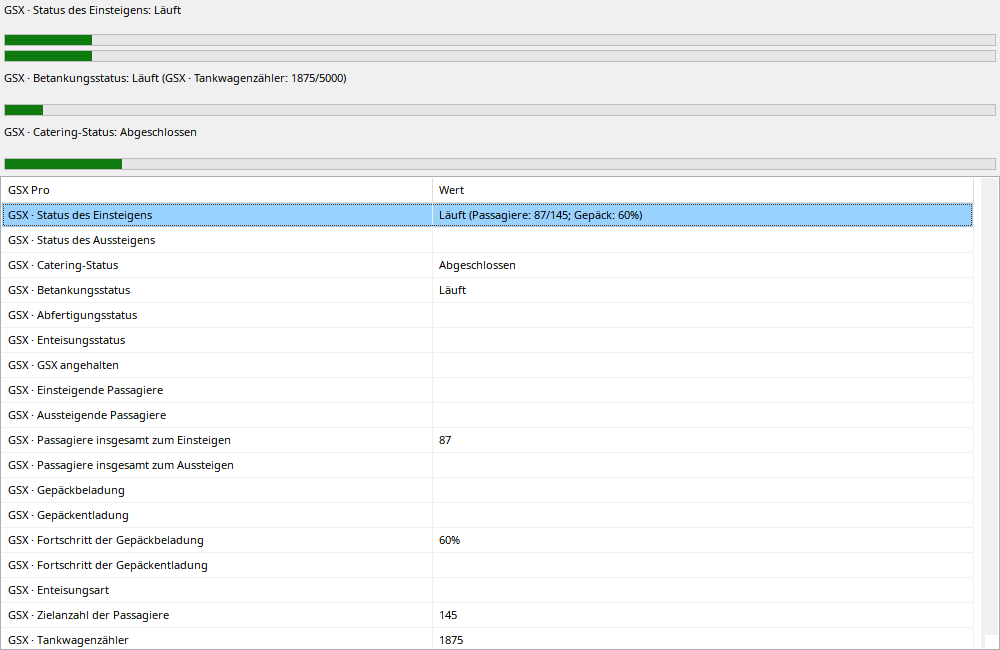

Dienste folgen angefordert, aktiv und beendet anhand aufgezeichneter GSX-Werte. Balken erscheinen ab Requested; ohne Ziel ist Animation kein gemessener Prozentsatz. Boarding zeigt Personen und Gepäck/Cargo, Tanken Menge/Ziel. Tankerwechsel kann Zähler zurücksetzen. Rückspulen verwendet nur damalige Werte.
GSX muss während der Aufnahme unterstützte Variablen liefern.
| Option / Aktion | Verhalten und Einschränkungen |
|---|---|
| Requested | Balken erscheint bei Anforderung, noch kein Beweis für Fahrzeugankunft oder messbaren Arbeitsbeginn. |
| Boarding / Deboarding | Vorhandene Passagier-/Gepäck-/Frachtzähler und bekannte Ziele. Historische Ziele nicht aus späteren Samples ableiten. |
| Betanken | Übertragene/Zielmenge und Tankwagenstatus. Mehrere Wagen/Resets möglich; einzelner Zähler nicht zwingend Fluggesamtmenge. |
| Weitere Dienste | Catering, Abflug/Pushback und Enteisung soweit verfügbar. Abschluss ohne Messung benötigt keine erfundenen Zwischenstände. |
| Replay | Rückwärts werden alte Zustände hergestellt. Beschreibungen übersetzt, rohe SDK-Felder unter Werte verfügbar. |
